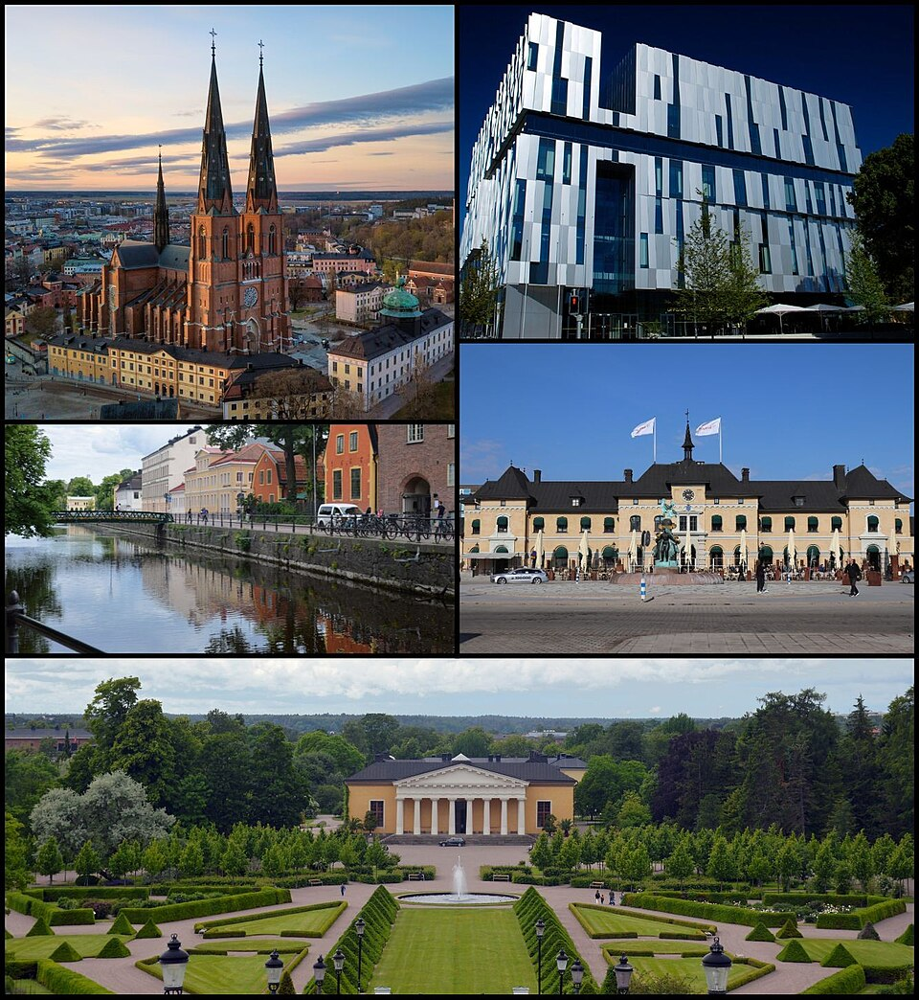
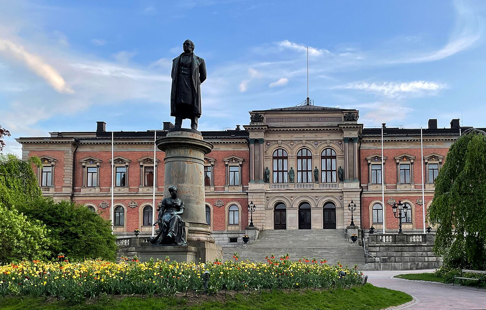

Uppsala domkyrka, Uppsala Konsert och Kongress,
Fyrisån, Centralstationen och Botaniska trädgården

Bildcollage av Uppsala
Fakta om Uppsala
Uppsala är en tätort i Uppland, centralort i Uppsala kommun och residensstad för Uppsala län.
Den är Sveriges fjärde största tätort med 174 982 invånare (2023) i tätorten, medan hela kommunen har cirka
249 000 invånare (2026)
Sedan 1164 är Uppsala kyrkligt centrum i Sverige i och med dess ärkebiskopssäte inom Svenska kyrkan.
Uppsala domkyrka är förutom ärkebiskopssäte inom Svenska kyrkan, också Skandinaviens största kyrka.
Uppsala universitet, grundat 1477, är det äldsta sätet för högre utbildning i Norden.
Uppsala Domkyrka är en kyrkobyggnad på Domberget i centrala Uppsala.
Den är domkyrka i Uppsala stift och församlingskyrka för Uppsala domkyrkoförsamling inom Svenska kyrkan.
Kyrkan är säte för biskopen av Uppsala och ärkebiskopen av Uppsala.
Efter att biskopssätet flyttats till Uppsala i mitten av 1200-talet började domkyrkan byggas 1272 eller
1273.
Den är uppförd i tegel och kalksten och ritades som en treskeppig basilika i gotisk stil, med inspiration
från franska förebilder.
När kyrkan invigdes 1435 var koret färdigställt och försett med koromgång, medan långhuset fått ett
tvärskepp och sidokapell.
Senare har ytterligare två sidoskepp tillkommit.
Källa:Wikipedia
Uppsala universitet

Uppsala universitet
Fakta om Uppsala Universitet
Uppsala Universitet är ett svenskt statligt universitet i Uppsala,
som grundades 1477 av ärkebiskop Jakob Ulfsson vilket gör det till Nordens äldsta universitet.
Uppsala universitet har alltsedan stormaktstiden utvecklats till ett av Europas främsta lärosäten
och rankas regelbundet som ett av Sveriges främsta, samt bland världens 100 främsta inom samtliga
discipliner.
Det rankades på 86:e plats i världen i Times Higher Educations rankning av världens främsta lärosäten 2018.
2023 rankades Uppsala universitet på 130:e plats i världen.
Källa:Wikipedia